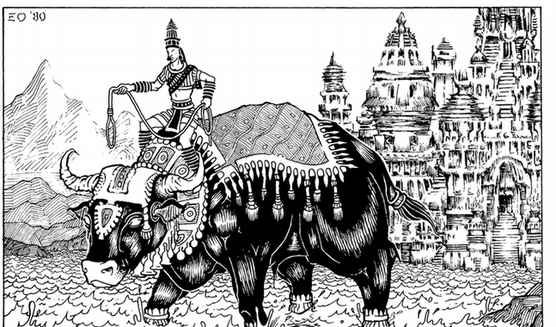

阎摩的水牛 · Yama’s Water Buffalo
独一无二的大型守序中立生物，AC 3，移动 24 英寸，100 点生命值，攻击 1 次，造成 4–40 点伤害。它可在陆地、空气、水面或太空中轻松移动，能拖动任何不固定在大地上的重量，并可承载两名全副武装的神祇。水牛对 Yama 绝对忠诚，不允许其他人骑乘；它按 16＋HD 怪物战斗，能理解 Yama 的复杂命令。

独一无二的大型守序中立生物，AC 3，移动 24 英寸，100 点生命值，攻击 1 次，造成 4–40 点伤害。它可在陆地、空气、水面或太空中轻松移动，能拖动任何不固定在大地上的重量，并可承载两名全副武装的神祇。水牛对 Yama 绝对忠诚，不允许其他人骑乘；它按 16＋HD 怪物战斗，能理解 Yama 的复杂命令。
